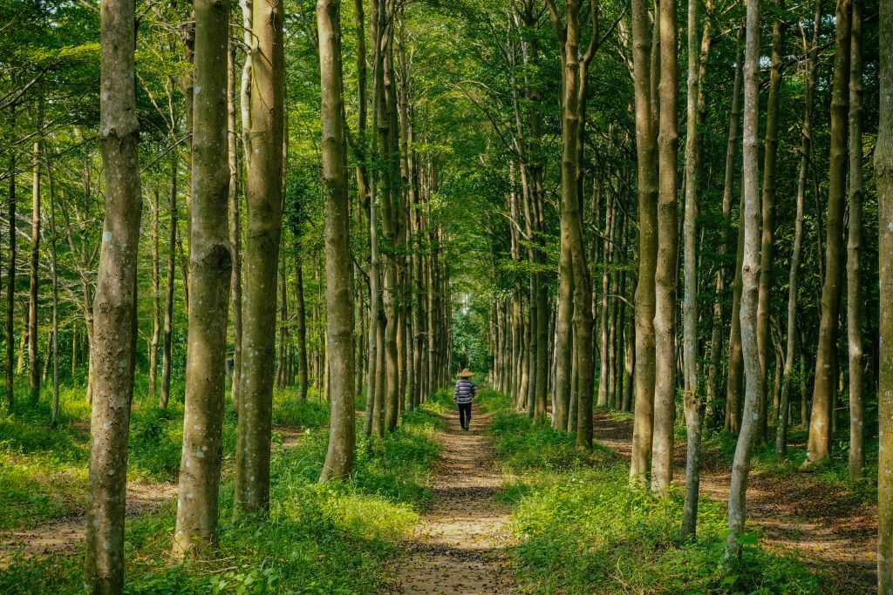
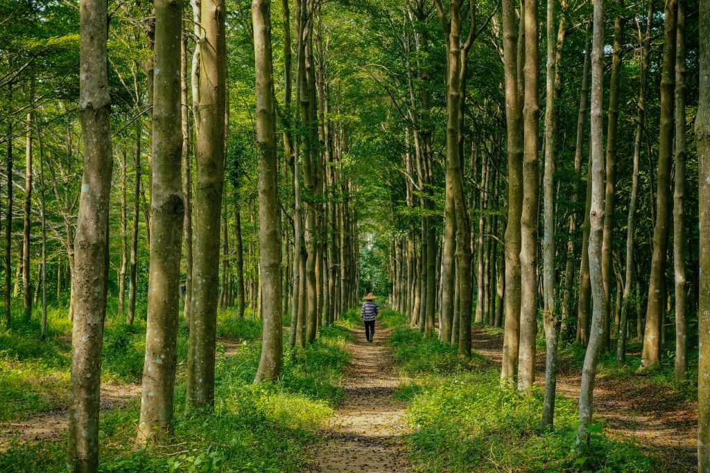

About Us
Leigh McAdam is a Calgary-based writer, photographer and social
media enthusiast with over 48,000 followers. Her blog:
HikeBikeTravel is frequently cited as one of the top travel and
outdoor adventure blogs in Canada, and consistently receives over
135,000 monthly page views. She shares her enthusiasm for the
outdoors as a brand ambassador for Sporting Life, and has worked on
campaigns for Travel Alberta, Expedia and Flight Hub. Leigh is the
author of Discover Canada: 100 Inspiring Outdoor Adventures.
Currently, she is co-authoring: 125 Nature Hot Spots in Alberta
(spring 2018). A true adventurer, Leigh will try anything once,
except perhaps bungee jumping.


 
